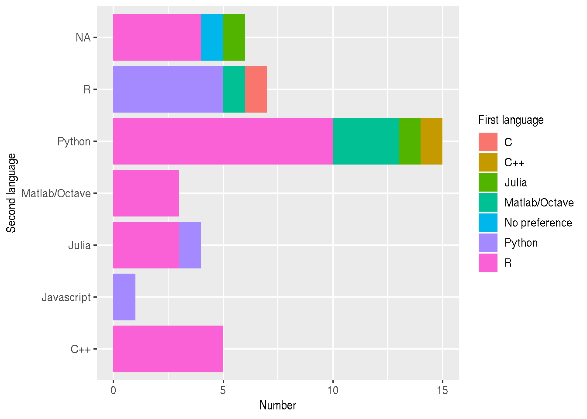

Introduction to Epirecipes
Simon Frost
Professor @Cambridge_Uni
Turing Fellow @turinginst


Acknowledgements
- Cambridge
- Dr. Allyson Walsh
- Dr. Lydia Drumright
- Prof. James Wood
- ATI
- Jade Thompson
Sponsors


Introduction
- Mathematical models of infectious disease transmission are widely used in research, policy-making etc.
- Field is becoming increasing computational
- Simple to complex models
- Analytical to simulation
- Deterministic to stochastic
- Relatively inexpensive
- Well suited for junior researchers
- Allows contributions from resource-limited settings
- Need capacity building and skill development
Current problems
- Efforts to increase capacity in disease modeling fall short
- Focus on the same, basic building blocks
- Models are often not ‘open’
- Model building process is hidden
- Details and/or implementation may not be available
- Hinders reproducibility - esp. important in policy making
- Models are often restricted to a single computer language
- May/may not be the best choice
- Limits extending models by others
- Not ‘plug and play’
- May involve installing an extensive toolchain
Keeling and Rohani (2007)

- Good selection of conceptual models
- Examples mainly in C/C++ and Fortran
- Some in Python
Vynnycky and White (2010)

- Focuses on introductory models
- Examples in MS Excel and Berkeley Madonna
Martcheva (2015)

- Some examples in Matlab
Kiss, Miller & Simon (2017)

- Focuses on network models
- Examples in Python
Li (2018)

- Only contains a single example of code for parameter estimation in Matlab
Courses
- There are a number of excellent courses in disease modeling in the UK alone:
- Imperial
- Cambridge
- LSHTM
- Material is often closed
- Typically adopt a single language for practicals
Why implementation matters
- Cost of commercial packages
- Matlab: >£200/yr
- Mathematica: c. £1000/yr
- Berkeley Madonna: > £200
Summary
- Courses and textbooks are limited in their use of examples:
- Number
- Diversity
- Implementation
- Access
- Language
- Publications present ‘state of the art’ models, but may not have an implementation, especially if not recent
Aims
- To complement existing resources by developing an online ‘cookbook’ of epidemiological models
- Objectives for models
- Illustrate different diseases, ‘tricks’, etc.
- Open source
- Implemented in multiple (free) computer languages
- Can be run via a web browser
Infrastructure
- Textbook is composed of multiple, separate Jupyter notebooks
- Web-based interface to Jupyter notebooks with ‘kernels’ for multiple languages
- Running on a virtual server on Microsoft Azure
- Available to download and run locally with minimal dependencies
‘Open’ notebooks
- Jupyter notebooks
- Many languages
- R notebooks
- R, Python, bash
- Observable
- Javascript
- Iodide
- Javascript, Python
Results of participant survey
Proficiency in first language
Second preference

Kernels included in epirecipes to date
- Python
- R
- Julia
- Octave
- Scilab
- Javascript
- C
- Fortran
- C++
SIR model
- Let’s take the standard ‘susceptible-infected-recovered’ model
\[ \frac{dS(t)}{dt} = -\beta S(t) I(t)\\ \frac{dI(t)}{dt} = \beta S(t) I(t)- \gamma I(t)\\ \frac{dR(t)}{dt} = \gamma I(t) \]
R vs Python
sir_ode <- function(times,init,parms){
with(as.list(c(parms,init)), {
# ODEs
dS <- -beta*S*I
dI <- beta*S*I-gamma*I
dR <- gamma*I
list(c(dS,dI,dR))
})
}
parms <- c(beta=0.1,gamma=0.05)
init <- c(S=0.99,I=0.01,R=0)
times <- seq(0,200,length.out=2001)
sir_out <- lsoda(init,
times,
sir_ode,
parms)def sir_ode(times,init,parms):
b, g = parms
S,I,R = init
# ODEs
dS = -b*S*I
dI = b*S*I-g*I
dR = g*I
return [dS,dI,dR]
parms = [0.1,0.05]
init = [0.99,0.01,0]
times = np.linspace(0,200,2001)
sir_sol = solve_ivp(
fun=lambda t, y: sir_ode(t, y, parms),
t_span=[min(times),max(times)],
y0=init,
t_eval=times)R vs Julia
sir_ode <- function(times,init,parms){
with(as.list(c(parms,init)), {
# ODEs
dS <- -beta*S*I
dI <- beta*S*I-gamma*I
dR <- gamma*I
list(c(dS,dI,dR))
})
}
parms <- c(beta=0.1,gamma=0.05)
init <- c(S=0.99,I=0.01,R=0)
times <- seq(0,200,length.out=2001)
sir_out <- lsoda(init,
times,
sir_ode,
parms)sir_ode = @ode_def SIRModel begin
dS = -β*S*I
dI = β*S*I-γ*I
dR = γ*I
end β γ
parms = [0.1,0.05]
init = [0.99,0.01,0.0]
tspan = (0.0,200.0)
sir_prob = ODEProblem(sir_ode,init,tspan,parms)
sir_sol = solve(sir_prob)Why different languages?
- If the differences in syntax are relatively minor, why consider other languages?
- Some are better suited for some tasks than others
- Loops
- The ‘two language’ problem
- Differences in the ecosystem
- You should code in what you like, but it may be necessary to ‘read’ other languages
- Interoperability is actually quite good
- R: reticulate, JuliaCall, XRpython, XRjulia
Objectives for the workshop
- I would like each of you to implement at least one model, ideally:
- A brief description of the model
- Ideally with equations and links
- A reference implementation in your favourite language
- Ideally with graphical output (if appropriate), a test, and a benchmark
- A brief description of the model
Which models?
- Your own
- Textbooks
- Literature search
- ‘Shopping list’ at https://github.com/epirecipes/shopping-list/issues
Results from survey

Potential concepts
- Deterministic models
- Stochastic (demographic/environmental) models
- Age structured models
- Spatial models
- Network models (edge-based, pair approx.)
- Non-exponential passage times
- Disease-specific models
Final outcomes
- Incorporation of notebooks into https://epirecip.es/epicookbook
- Each with individual attribution
- Group publication:
- Journal of Open Source Education
- F1000 Research
After Wednesday?
- Explore getting DOIs for individual notebooks
- Continued contributions:
- Papers
- Part of lab meeting
- Part of classes
- Future workshops?
- Network models
- Agent-based models
Facilitators
- James Lester: Python, R, Matlab
- Gerry Tonkin-Hill: Python, R, Matlab, C++
- Zhian Kamvar: R
- Rich Fitzjohn: R, C
- Thibaut Jombart (from Tuesday): R
- Chris Rackauckas: Julia
- Myself: Everything else…
…plus anyone else who wants to help
Agenda for Monday
- 10:00-10:30: Introduction: Simon Frost
- 10:30-11:00: Jupyter/Observable notebooks: Simon Frost
- 11:00-11:30: Coffee break
- 11:30-11:45: R Epidemics Consortium: Zhian Kamvar
- 11:45-12:00: Modeling in R: Rich FitzJohn
- 12:00-12:30: Modeling in Julia: Chris Rackauckas
- 12:30-13:30: Lunch
- 13:30-14:00: Testing the platform
- 14:00-15:00: Coding!
- 15:00-15:30: Coffee break
- 15:30-17:00: More coding
During the workshop
- Be social:
- Twitter:
#epirecipesand follow@epirecipes
- Twitter:
- Be respectful:
- ATI Code of Conduct: https://www.turing.ac.uk/sites/default/files/2018-07/events_-_delegate_code_of_conduct_policy_v1.pdf
- Epirecipes Code of Conduct: http://bit.ly/EpirecipesCodeOfConduct
- Be inclusive:
- Eric Holscher’s ‘PacMan rule’
Thanks!


Social events